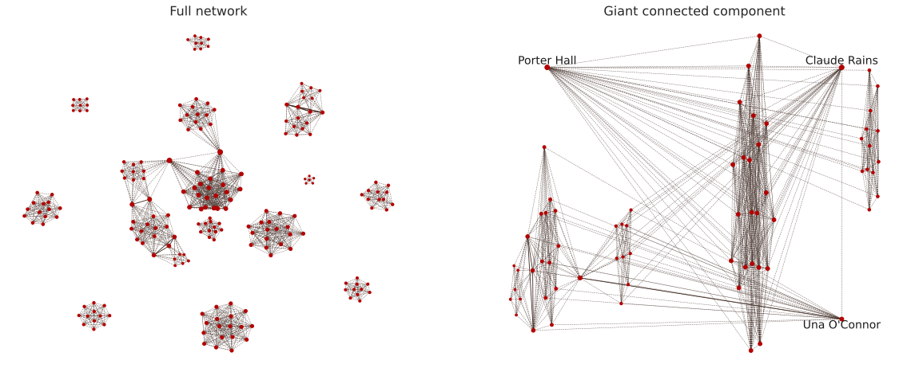

Network of actors from decade to decade
The 1000 top rated movies on IMDB have release year spanning from the 1920s to 2020. Hence, it is quite interesting to dig further into the network of actors in the respective decades to see if the actors become more and more connected. To do so the degree distribution together with a visualization of the full network and the giant connected component is visualized for each decade. For the giant connected component the three nodes with the highest degrees have been labeled with the name of the respective actors and their nodes have been positioned in seperate corners of the graph. In addition, the edges between nodes have been seperated into two groups; edges with a weight of 1, meaning that the actors have starred in one movie together, and edges with a weight of more than 1, meaning that the two actors have starred in more than one movie together. Edges with a weight of 1 is represented by a dashed, light brown line, while edges with a higher weight is represented by a solid, dark brown line. Furthermore, some basic statistics of the network in each decade is shown below the visualization of the network. Note, that movies that were released in 2020 have been included in the 2010s.Explanation of symbols
1920


Based on the top 1000 rated movies, the network of actors in the 1920s consists of 8 connected components.
As it was shown in the statistics of all 1000 movies, only nine
was made in the 1920s. Thus, the eight connected components reflects that seven of these just corresponds to one movie, while the last one
is the network of two movies. The plot of the giant connected components shows that Joe Keaton and Buster Keaton starred in both of these movies
and hence, the edge between these two actors is solid, which represent that they are connected by more than one movie. The fact that Wolfgang Heinz
is shown as the actor with the third highest degree is just a coincidence and it might as well have been one of the other actors in the particular
movie that he starred in. The seven components that each represent the cast of a movie are so called cliques, or complete graphs, where all nodes are
connected, which can also be seen at the plot of the full network to the left, where there are edges between all nodes within the cliques.
It is found that the minimum node degree is three, meaning that there is a movie with a cast of only four, while the maximum degree of a node is 13.
Since this degree belongs to Buster Keaton and Joe Keaton it reflects that they in total are connected to 13 other actors by starring in two movies.
Since the network in this decade is very disconnected, the plot of the degree distribution can almost be viewed as the number of actors in each movies.
However, note that it is not exatly the case, but it is a good indication of the cast sizes, since only two movies are connected in this decade.
1930

It was shown in the statistics that 17 movies on the IMDB list was produced in the 1930s, but now
the network consists of 12 components, so the network of actors have become more connected in this decade compared to the 1920s. Furthermore, the giant
connected component now includes 32.9% of all the nodes in the network. However, the maximum edge weight is still 2, which means that two actors have not
starred together in more than two movies in this decade, and the average edge weight is 1.01, so in general actors have only starred in one of the top
rated movies together in this decade. The degree distribution shows that two actors have degrees of 36, resppectively 34, which is significantly higher
that the rest of the actors. These two actors are Porter Hall and Claudia Rains, which are labelled in the visualization of the giant connected component.
Since these degrees are that much higher that the rest we start to see hub-like tendencies in the full network, which can also be seen on the plot of the
full network, where the two biggest nodes looks like hubs.
1940

In the 1940s we find that there only are four components, and the giant component is significantly bigger that in earlier decades, where 85.8% of
all nodes are represented in the giant component. The highest degree of a nodes is also increased significantly to 122, which belong to the actor
Ward Bond. The visualization of the giant connected components shows that he is connected to the actors with the second and third highests degrees
with edges of weight more than one, so he has participated in several movies with the two actors. In addition, the highest weight of an egde is now 3,
so at least two actors have starred in three movies together. Even though the majority of the actors are in the giant connected component, there appears
to be quite a large network in the second largest component, which on the plot appears to be a clique, so we investigate what this component is. We find
that this indeed is a clique, which consists of the cast of the movie Bicycle Thieves. Interestingly, this is an Italian movie, and thus this can
explain why they are not connected to the other nodes, which might be movies from the USA or other countries.
1950

In the 1950s we see that the three nodes with the highest degrees all have Japanese-sounding names, which is quite interesting since the majority of the
1000 movies are produced in USA. Thus, we investigate this further and find that of the 3 of the 1000 top rated movies was produced in Japan in the
1950s and all was directed by the Japanese director Akira Kurosawa. The degree distribution shows that four actor have the highest degree of 144,
but actually ten other actor have a degree of 137, so again we observe that we get more and more hub-tendencies in the network.
1960

The 1960s is a quite interesting decade, where the three nodes with the highest degrees are Toshirô Mifune, Yoshio Tsuchiya and Yutaka Sada, but these
are not part of the giant connected component. Instead they must be part of the second biggest component, which appears to be quite large as well, which is
also seen in the fact that only 72.3% of all nodes are contained in the giant connected component. As for the 1950s we see that the names of the actors
with highest degrees are Japanese-sounding, so the second largest component is a component of Japanese movies. An explanation of why the actors with the
highest degrees are not in the giant connected component could be, that the giant connected component consists of more, smaller movies that are connected
by actors that star in more of these movies. On the contrary, the second largest component consists of fewer movies but with bigger casts, which results
in higher degrees for the actors that star in several of these movies. The degree distribution in this decade looks a bit like a Poisson distribtion, which
would indicate that the network of actors in the decade is a random network. However, it is not strictly following a Poisson distribution, since
there is a quite long tail to the left, where nodes have a very high degree.
1970

In the 1970s the network of actors consists of 2043 nodes, with one giant connected
component and ten smaller components. The degree distribution shows that the actor with the highest degree, Diane Keaton, has a degree of 250, which
is signifantly higher than the rest of the actors. The plot of the giant connected components shows, that the actors with the highest degrees are connected
by edges with a weight higher than one, so these actors have starred in several movies together. Furthermore it is find that 85.2% of all nodes are
included in the giant connected component and that the average shortest path between two nodes in this network is 2.97.
1980

In the 1980s the network of actors becomes even more connected with a giant connected component that consists of 93.1% of all the nodes. The actors
with the highest degrees in this decade is Robert De Niro, Carrie Fisher and Harrison Ford, who have degrees of 332, 314 and 298, respectively. The
degree distribution furthermore shows that there are multiple actors with degrees above 150, while the majority har significantly lower degrees.
However, we observe some interesting spikes in the degree distribution with many actors having degrees of 62, 90, 104 and 146, respectively. These spikes
might indicate the cast sizes of particular movies, since so many actors fall within these degrees.
1990


In the 1990s we again find Robert De Niro to be one of the three nodes with the highest degree. This indicate that he indeed was very active in his
acting career in the 1980s and 1990s. Furthermore we observe an even larger giant connected component with 95.2% of all nodes. The smaller components
might just consist of one movie, which will explain the minimum degree of 9, which is most likely representing that the cast of a movie is 10. Even though
the average edge weight is still 1, we now found that the highest edge weight is 6, which means that at least two actors have starred together in 6 of the
1000 top rated IMDB movies in the 1990s. This is quite impressive!
2000

The 2000s is actually the decade with the biggest network, which consists of 9126 nodes and it is also the decade with the most movies on the IMDB list,
where 213 of the movies were produced in this decade. However, interestingly the giant connected component actually contains a lower percentage of the
total number of nodes compared to the 1990s, since 91.3% of all nodes are contained in the giant component in the 2000s compared to 95.2% in the 1990s.
Furthermore, the maximum edge weight in this decade is 4, compared to 6 in the 1990s, so it appears that there might be a greater variance in the actors
used in this decade compared to the 1990s. Another interesting observation is the fact that the actor with the highest degree, Chiwetel Ejiofor, is not
connected to the actor with the second highest degree, Christian Bale, which has been the case in the earlier decades. However, we do see that Christian
Bale is connected to Gary Oldman, who is the actor with the third highest degree, and these are actually connected by an edge with a weight higher than 1,
so they have starred together in several of the top rated movies on IMDB in the 2000s.
2010

Finally, we look at the network of actors from the 2010s. We observe that the actor with the highest degree, Stan Lee, has a degree of 633, so
in the 2010s he has starred together with many actors - he has not starred together with exactly 633, since he have starred together with some of
the actors in more than one movie. As an example, on the visualization of the giant connected component we observe that he is connected to Scarlett
Johansson by an edge with weight more than 1, so these two actors have starred in at least two of the top rated movies in the 2010s. Furthermore we
observe that the 2010s actually consists of 18 components, which suggests that the variety of used actors in this decade is bigger compared to some of
the earlier decades. It could further indicate that countries with smaller movie indutries compared to Hollywood, produce movies that make it to the
top 1000 rated movies on IMDB and thereby results in multiple, smaller components in the entire network.